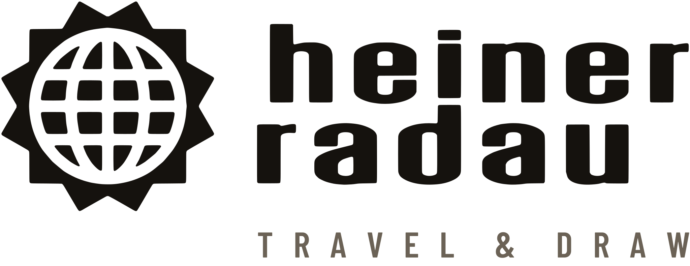
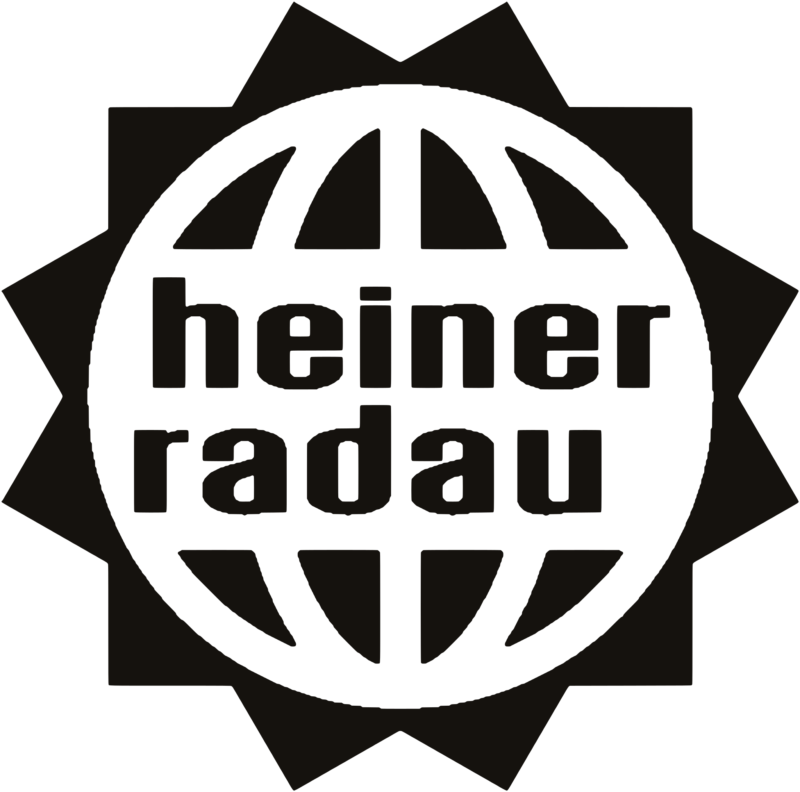
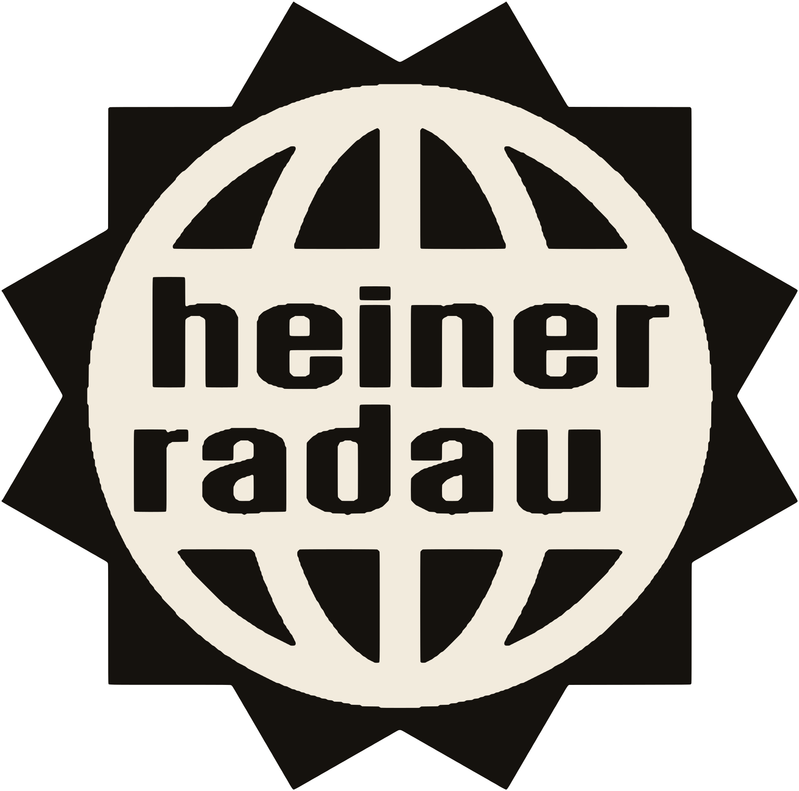
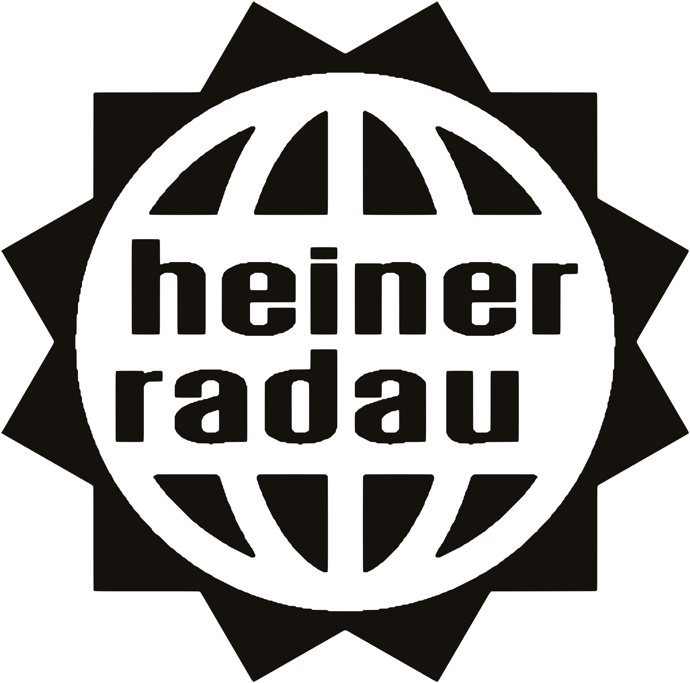
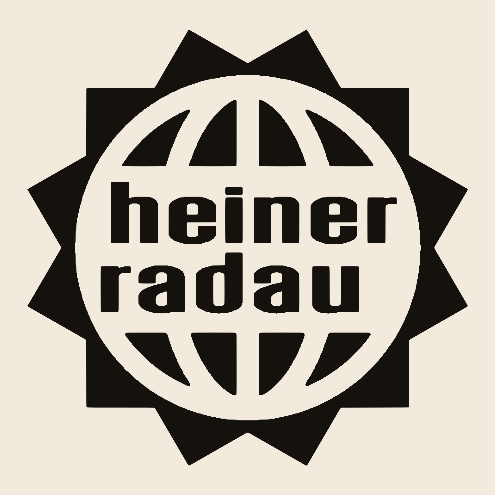

Visuelle Identität · v2 · 23.10.2026
Alle Regeln: README.md · Tokens: tokens.css / tokens.json






Eyebrow · Barlow Condensed 600
Barlow 400 — Fließtext, 16–17 px, Zeilenhöhe 1,6. Every line is drawn live on the street — with dip pen and ink, no photo reference, no eraser.
Georgia — Story, Geschichte, Emotion: „Every line is a memory. Every place has a story.“